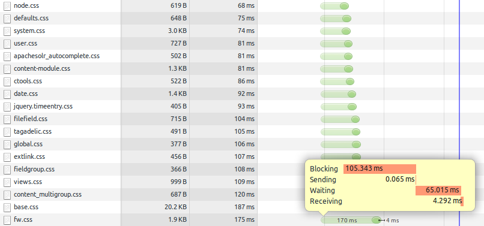

Les webperfs
pour les nuls
Timothée Carry
- Consultant Octo Technology
- Spécialiste en Web Front
- @pixelastic à l'extérieur
Pourquoi ?
Impact sur la marque
-
Utilisateurs de moins en moins patients
- Site lent au bout de 4s en 2008, 3s en 2014
- Nouvelle génération habituée à l'instantané
- Explosion du nombre de terminaux mobiles
-
Relation à l'image de marque
- Avantage concurrentiel si rapide
- Frustration reportée sur la marque si lent
Amazon perd 1% de ventes pour chaque tranche de 100ms de chargement
Serveur
france.fr
github.com

Arrêter la procrastination
-
Blocking : temps perdu à ne rien faire
- Entre
requestTimeetstartTime - UI, local cache, DNS lookup, limit of max connections
- Recommence à chaque requête
- Entre
- Garder 1 (ou 2) fichiers CSS et Javascript
Gzip all teh things
-
Gain de 66% en moyenne
- Gain plus importants sur des gros fichiers
- Très facile à mettre en place
- Très bon support navigateur (IE5.5+)
-
Large spectre
- HTML / CSS / Javascript
- XML / JSON
- SVG / WOFF
france.fr
18 fichiers
apachesolr_autocomplete.css
base.css
content-module.css
content_multigroup.css
ctools.css
date.css
defaults.css
extlink.css
fieldgroup.css
filefield.css
fw.css
global.css
jquery.timeentry.css
node.css
system.css
tagadelic.css
user.css
views.css154K
18 fichiers gzippés
apachesolr_autocomplete.gz
base.gz
content-module.gz
content_multigroup.gz
ctools.gz
date.gz
defaults.gz
extlink.gz
fieldgroup.gz
filefield.gz
fw.gz
global.gz
jquery.timeentry.gz
node.gz
system.gz
tagadelic.gz
user.gz
views.gz 33K
1 fichier gzippé
all-in-one.gz28K
Apache
<IfModule mod_deflate.c>
<IfModule mod_filter.c>
AddOutputFilterByType DEFLATE "application/javascript" "application/json" \
"text/css" "text/html" "text/xml" [...]
</IfModule>
</IfModule>Lighttpd
server.modules += ( "mod_compress" )
compress.filetype = ("application/javascript", "application/json", \
"text/css", "text/html", "text/xml", [...] )nginx
gzip on;
gzip_types application/javascript application/json text/css text/html text/xml [...]; Attention aux proxies
- Décompression
- Modification du
Accept-Encodingde la requête - Modification du
Content-Encodingde la réponse
Minification
-
Suppression de l'inutile
- Commentaires
- Whitespace
-
Réécriture plus légère
- Valeurs par défaut
- Noms de variables
- Mutualisation

clean-css
main.css
apachesolr_autocomplete.message{font-size:80%;color:#888}.apachesolr_autocomplete.count{float:right}div.apachesolr_autocomplete.suggestion{display:inline;float:left}div.ac_results li{list-style:none;background-image:none!important}154K ⇒ 111K
uglify-js
main.js
apachesolr_ajax={};apachesolr_ajax.finalize=function(settings){pm.maps();$("#tooltip").hide();pm.tooltips();pm.jScrollPane();pm.carousels();pm.datepicker();pm.chooseLanguage();pm.popins();$("#filters-nav li").find(".indicator").hide();$("#overlay").hide();$("#filters-nav li").removeClass("active");$(".item a").hover(function(){$(this).find(".short").addClass("accessibility")},function(){$(this).find(".short").removeClass("accessibility")})};428K ⇒ 331K
html-minifier
index.html
<body class=layout-home><div class=apachesolr_ajax></div><div id=content class=gradient-1><p id=access-keys><a href=#page>Allez au contenu</a> <a href=#nav>Allez à la navigation</a> <a href=#search>Allez à la recherche</a> <a href=#lang lang=en>Change language</a></p></div></body> 50K ⇒ 39K
Régime sans cookies
- Envoyé sur chaque requête (300B en moyenne)
- Inutile pour les assets statiques
france.fr
fieldgroup.css
div.fieldgroup {
margin:.5em 0 1em 0;
}
div.fieldgroup .content {
padding-left:1em;/*LTR*/
}454B
Cookie header
has_js=1;
xtvrn=$499610$;
xtan499610=-;
xtant499610=1;
__utma=132163929.1854756013.1405454567.1405454567.1405454567.1;
__utmb=132163929.1.10.1405454567;
__utmc=132163929;
__utmz=132163929.1405454567.1.1.utmcsr=(direct)|utmccn=(direct)|utmcmd=(none)249B
Simple redirection CNAME
static.france.fr 10800 IN CNAME www.france.fr.ou
static-france.fr 10800 IN CNAME www.france.fr.www.domain.com > domain.com
- Cookies sur
domain.coms'étendent sur*.domain.com _setDomainNamepour Google Analytics
Les images, le poids lourd
-
Un poids lourd sur la page
- 58 fichiers
- total 2.4Mo
- max 330Ko
-
Différents formats, différents usages
- jpg : photos
- png : transparence
- svg : vectoriel
- gif : lolcats
JPG

117Ko
-
Deux types de compression
- Lossless : Suppression des metadatas
- Lossy : Suppression d'informations visuelles
Lossless
exiftool
Global Angle : 30
Global Altitude : 30
Photoshop Quality : 8
Photoshop Format : Standard
Progressive Scans : 3 Scans
Creator Tool : Adobe Photoshop CS5 Windows
Metadata Date : 2012:03:07 14:30:01+01:00
Document ID : xmp.did:95857168571111E19FCB8718798C7280
Original Document ID : xmp.did:95857168571111E19FCB8718798C7280
Color Mode : RGB
History Action : saved
History Instance ID : xmp.iid:2D7184A45968E1119E06F8EC5C23B74C
History When : 2012:03:07 14:30:01+01:00
History Software Agent : Adobe Photoshop CS5 Windows
History Changed : /
Thumbnail Image : (Binary data 2692 bytes)jpegtran
31Ko ⇒ 3.9Ko
Lossy
117Ko

41Ko
jpegoptim
Invisible à l'œil nu pour compression ~80%
PNG, l'oublié
-
Format polyvalent
- Transparence alpha
- Palette 256 couleurs (PNG8) ou infinité (PNG24)

5.7Ko

4.4Ko
pngquant
GIF
- Palette de 256 couleurs.
- Un seul canal de transparence.
- Se compresse peu.
- ...
- Images animées

Sprites
- Plusieurs images en une.
- Gain sur le nombre de requetes et sur la compression.
- On joue ensuite sur background-position en CSS.
Attention
- Nécessite des éléments de taille fixe.
Cache
Une fois téléchargé, inutile de le télécharger à nouveau. HTTP propose des mécanismes puissants pour gérer le cache, à deux niveaux. Au niveau du browser (ne lance la requete que si la date est expirée), ou au niveau du server (indique au serveur la dernière date, le serveur réponds avec une nouvelle version ou rien si la version actuelle est ok). Plusieurs mécanismes, je présente ceux que je préfère. Invalidation du cache, l'une des choses les plus difficile. Asset caché potentiellement par des proxies, firewalls, Plus simple de changer l'url. Timestamp de dernière génération dans l'url, md5 dans le nom, etc.Client
Humain
Questions ?
Annexes
Des ressources existent depuis longtemps
Des outils matures
Serveur
DNS, le goulet d'étranglement
- Passage obligatoire de toute requête
- Zone grise entre le client et le serveur
- Limite de connections simultanées coté client
- Peu de solutions (limiter le nombre de domaines)
Le CDN est la dernière étape, pas la première
- Souvent utilisé comme solution de facilité
- Gains plus importants sur les autres points
Adaptez à votre cas de figure
- Etsy charge ses assets statiques depuis le même domaine que le site principal